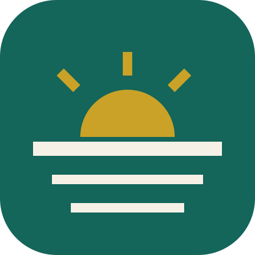

فجر القرآن
أذكار يومية · أندرويد ٥ أو أحدث · ٢١ كيلوبايت
ملف التثبيت الرسمي، حوالي ٢١ كيلوبايت فقط
الأقسامأذكار الصباح (١٢) والمساء (١٢) وبعد الصلاة (٨) والنوم (٦)
المصادرالقرآن الكريم وصحيح السنة (حصن المسلم)، مع مصدر كل ذكر
الخصوصيةلا يطلب أي أذونات، ولا يجمع أي بيانات، ولا يحتاج إنترنت
النسخة١٫٠ - ثُبّتت وفُتحت على موبايل أندرويد